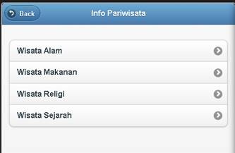
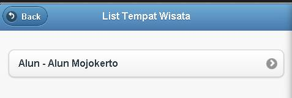
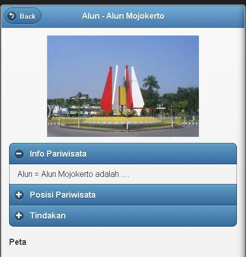
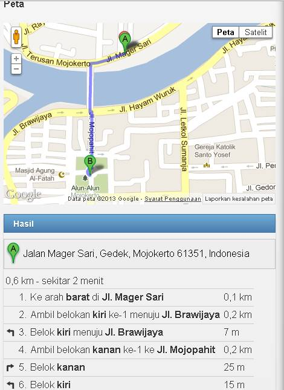

Untuk Melihat Info Pariwisata apa saja yang ada di Mojokert klik Info Pariwisata
Didalam Sub Menu tersebut akan ada Info Wisata Apa Saja yang ada disitu

Kategori Wisata Tersebut akan selalu Diupdate untukmendapatkan Info terbaru , Setelah memilih salah satu Kategori dari Pariwisata tersebut , selanjutnya akan ada list dari Wisata yang seperti diharapkan

Klik Wisata tersebut maka anda akan melihat info dan lokasi dari wisata yang anda pilih

Informasi tersebut adalah informasi mengenai penjelasan dari pariwisata tersebut dan peta dari pariwisata tersebut , untuk melihat arah ke sana klik pada Tindakan dan klik Directions
Maka Aplikasi akan mendeteksi lokasi anda dan mendapatkan arah menuju ke tempat wisata yang anda inginkan
